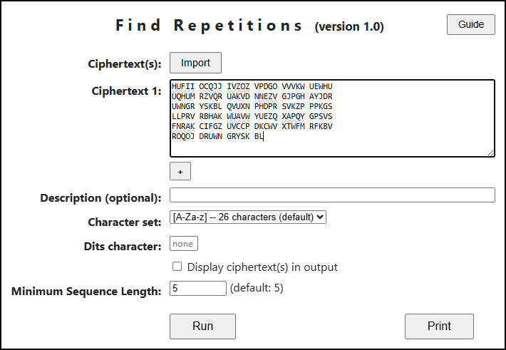
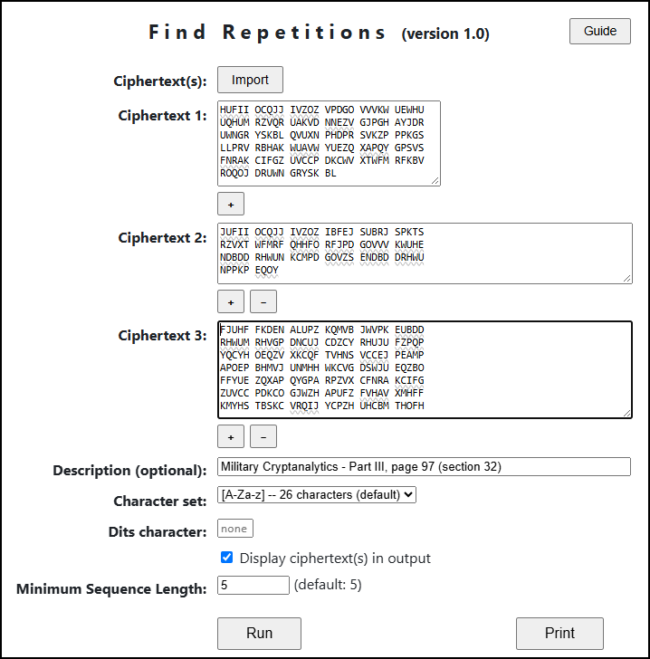
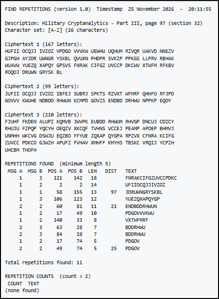
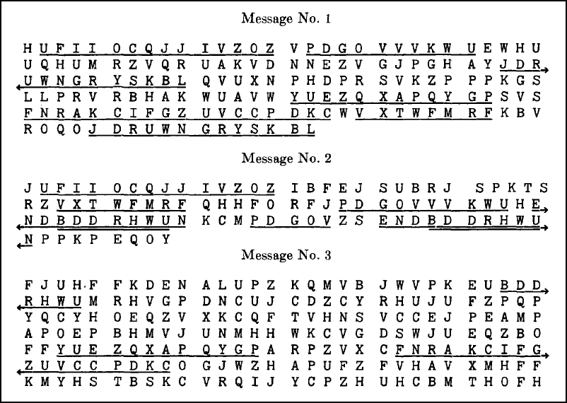

Multiple ciphertexts manually inserted
In this example we will see how to enter multiple ciphertexts, searching for repetitions between all of them (and within each message).
The following three messages are taken from Military Cryptanalytics, Part III, page 97 (section 32):
HUFII OCQJJ IVZOZ VPDGO VVVKW UEWHU
UQHUM RZVQR UAKVD NNEZV GJPGH AYJDR
UWNGR YSKBL QVUXN PHDPR SVKZP PPKGS
LLPRV RBHAK WUAVW YUEZQ XAPQY GPSVS
FNRAK CIFGZ UVCCP DKCWV XTWFM RFKBV
ROQOJ DRUWN GRYSK BL
JUFII OCQJJ IVZOZ IBFEJ SUBRJ SPKTS
RZVXT WFMRF QHHFO RFJPD GOVVV KWUHE
NDBDD RHWUN KCMPD GOVZS ENDBD DRHWU
NPPKP EQOY
FJUHF FKDEN ALUPZ KQMVB JWVPK EUBDD
RHWUM RHVGP DNCUJ CDZCY RHUJU FZPQP
YQCYH OEQZV XKCQF TVHNS VCCEJ PEAMP
APOEP BHMVJ UNMHH WKCVG DSWJU EQZBO
FFYUE ZQXAP QYGPA RPZVX CFNRA KCIFG
ZUVCC PDKCO GJWZH APUFZ FVHAV XMHFF
KMYHS TBSKC VRQIJ YCPZH UHCBM THOFHWe begin by copying the first ciphertext into the input box labeled Ciphertext 1:

To add the second ciphertext, click + under the first box and paste it in. Do the same for the third, enter a description, and check Display ciphertext(s) in output. The page now looks like this:

Click Run to execute the search.

These results are identical to the ones shown in Military Cryptanalytics (see the underlined repetitions):

The 13-letter repetition JDRUWNGRYSKBL within message 1
and the 10-letter PDGOVVVKWU shared by messages 1 and 2 are
the ones the book studies. For what repetitions between messages can
tell you, see Uses
of repetitions between messages.